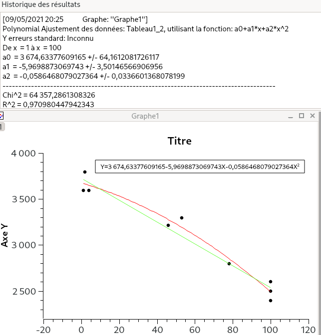

Création et mise en place d'un daemon sous Fedora
Ou : comment faire en sorte que mon pc portable ne surchauffe pas ?
Introduction
Il y a environ 6 mois, je me suis procuré un nouvel ordinateur portable. Mon ancien pc se faisait vieux (presque 10 ans !) et malgré toutes mes tentatives de résurrection il demandait à prendre sa retraite. Je me suis donc acheté un ThinkPad, y ai installé Fedora (Une distribution GNU/Linux) tout en laissant Windows 10 pré-installé. J’étais très content de mon nouveau système d’exploitation (L’environnement de bureau gnome 34 est super), seulement voilà, il y avait un petit bémol : j’avais remarqué que le système de refroidissement s’activait moins sur Fedora que sur Windows.
Cela était très embêtant : j’avais aucune envie qu’il y ait un risque de surchauffe sur Fedora. Dans cet article, je vais donc vous raconter ma petite aventure et comment j’en suis arrivé à écrire un petit script pour éviter une surchauffe de mon nouveau pc.
Petit état des lieux
Dans un premier temps, je voulais comprendre ce qui ne fonctionnait pas. J’ai tout simplement soumis mon pc à un stress test. (En utilisant AIDA64 sur Windows et s-tui sur Fedora). Résultat :
- Sur Windows : À un taux d’utilisation de 100 % du processeur, la température avoisinait les 55°C avec une fréquence de 2900 mHz
- Sur Fedora : À un taux d’utilisation de 100 % du processeur, la température avoisinait les 90°C (!) avec une fréquence de 3400 mHz
{kind=link}
Cela me laissait penser que le problème venait du fait que la fréquence du processeur n’était pas régulé.
Thermald, throttle et idée du script
Au début je me suis dit qu’il s’agissait d’un simple problème de configuration post-installation. J’ai fait quelque recherches et j’ai appris qu’il existe un daemon (un processus s’exécutant en arrière plan) nommé thermald. Thermald est donc un daemon qui a a en charge la mesure et le contrôle des température des processeurs intel afin d’éviter une éventuelle surchauffe.
Génial, non ? Il suffit d’installer/configurer thermald et problème résolu ! Non ? Eh bien, non. Après avoir longtemps errer sur des forums de Lenovo et Thinkpad, je me suis rendu compte que thermald était effectivement bien installé sur Fedora mais ne prenait pas en charge mon pc.
Retour à la case de départ donc ? Non, pas exactement. Dans mes recherches, j’ai appris que certains modèles de ThinkPad le processeur souffrait d’un étranglement thermique. (Lien de l’article où Lenovo admet le problème est ici). Je ne vais pas expliquer ce que c’est exactement un étranglement thermique, mais plutôt ce que j’ai appris en essayant de comprendre ce que c’était et qui va me servir par la suite. (Mais je vous mets un lien ici)
Une personne (erpalma) avait réussi à palier à ce problème en développant un programme baptisé throttled. J’ai appris deux choses : la première c’est que ce programme est un daemon et la deuxième c’est que il était assez facile d’exécuter un script en arrière plan à chaque fois que l’ordinateur démarre via Systemd (Systemd est un système d’initialisation. En très simplifié, il est le premier processus exécuté et qui a la charge de démarrer tous les autres processus)
Du coup, mon idée était de faire un script qui se lancerait à chaque démarrage via Systemd. C’est bien beau de vouloir faire un script pour régler le problème éventuel de surchauffe, mais comment ? Dans mes recherches (Oui, ça m’a pris des jours) j’étais tombé sur deux programmes. Le premier permet de régler la vitesse du ventilateur. Le deuxième permet de fixer une fréquence limite au processeur.
La première option ne me plaisait pas, elle me paraissait trop risquée et de toute façon j’ai appris que dans mon cas la vitesse du ventilateur était régulé par le bios ; le système d’exploitation n’a pas la main dessus.
La deuxième option me paraissait bien. Il suffisait juste de taper une simple commande dans le terminal pour fixer une fréquence limite au processeur à ne pas dépasser (cpupower frequency-set -u frequence_mhz). Et en plus de cela, j’étais tombé sur une formule mathématique qui établissait une relation entre température du processeur et fréquence du processeur. (Cela confirmait bien mon hypothèse de départ)
Je me suis donc lancé dans la création d’un script régulant la fréquence du processeur et son taux d’utilisation.
Création du script
Fonctionnement
J’allais écrire mon script en bash car cela me permettait d’exécuter des commandes au sein du script. Le but était d’avoir un script qui allait dynamiquement fixer une fréquence limite en fonction du taux d’utilisation du processeur. Pour ce faire, mon idée est de définir dix paliers de taux d’utilisation, chaque palier ayant une différence de 10 % (Par exemple le palier 0 est compris entre 0 % et 10 % d’utilisation, le palier 1 entre 10 % et 20 %, etc..) Chaque palier étant associé à une fréquence limite.
Procéder de cette manière me permet de faire un script basique consistant en une boucle infinie sur laquelle est imbriqué plusieurs instructions conditionnelles. En gros, voici comment mon script opère :
- Calcul du taux d’utilisation
- Si le taux d’utilisation est compris dans un palier donné, exécuter la commande
cpupower. (Par exemple si le taux d’utilisation est compris entre 10 % et 20 % appliquer une fréquence limite de tant) - Répéter
Définir les valeurs des fréquences limites
Petit problème : comment trouver les bonnes valeurs pour les fréquences limites ? Je pouvais utiliser la formule que j’avais trouvé précédemment, mais je vous avoue je ne savais pas comment où trouver les bons paramètres. Du coup, je me suis dit que j’allais tout simplement observer comment Windows fixait ces valeurs, récupérer quelques données et faire une bonne vieille courbe de régression !
{kind=link}
Grace à la courbe de régression, j’ai maintenant une formule et je peux donc faire ce petit tableau de valeurs !
| Palier | Pourcentage | Fréquence (en mHz) |
|---|---|---|
| 0 | [0%-10%[ | 3500 |
| 1 | [10%-20%[ | 3400 |
| 2 | [20%-30%[ | 3200 |
| 3 | [30%-40%[ | 3100 |
| 4 | [40%-50%[ | 3000 |
| 5 | [50%-60%[ | 2800 |
| 6 | [60%-70%[ | 2600 |
| 7 | [70%-80%[ | 2500 |
| 8 | [80%-90%[ | 2400 |
| 9 | [90%-100%] | 2200 |
Ah ! Il y a un petit détail à régler : le calcul du taux d’utilisation du processeur. Sur ce point je me suis pas foulé, je n’avais pas la pêche le lire des pages du manuels du noyau linux, j’ai repris une partie du code d’un internaute qui avait répondu à une question sur stackoverflow
Explication (briève) du script
Vous pouvez télécharger le script complet en ici. Je ne vais pas expliquer de détails du script, mais plutôt, je vais revenir sur certains points.
Déclaration des variables
State0=0 LowerLimitState0=0 UpperLimitState0=10 LimitFrequency0=3500mhz
Dans un premier temps, je vais déclarer l’ensemble de mes variables. Ci-dessus, j’ai défini quatre variables pour mon palier 0 (Le palier entre0 % et 10%) :
State0est une variable pour identifier le palier 0. On le verra plus tard, mais cela me permet de ne pas refixer une fréquence limite si on n’a pas bougé de palier.LowerLimitState0correspond au début du palier. (Pour le palier 0 c’est 0 %)UpperLimitState0correspond à la fin du palier. (Pour le palier 0 c’est 10 %)LimitFrequency0correspond à la fréquence limite à appliquer au palier 0.
L’avantage de définir des variables en début de code, c’est que cela permet d’une part une meilleur lisibilité et d’autre part, si l’on veut modifier une valeur il suffit de modifier la valeur assignée à la variable plutôt que de changer la dite valeur à chaque partie du code.
Boucle infinie
while true do #Instruction pour calculer le taux d’utilisation du processeur #Est ce que le taux d’utilisation correspond à tel palier ? done
Il s’agit ici d’une boucle infinie, elle va exécuter chaque instruction contenue à la l’intérieur indéfiniment. (Ce qui est parfait dans notre cas, on veut que le script fonctionne tout le temps)
Instruction conditionnelle
if [ $LowerLimitState0 -le $CPU_Percentage ] && [ $CPU_Percentage -lt $UpperLimitState0 ] && [ $CurrentState -ne $State0 ] then cpupower frequency-set -u $LimitFrequency0 CurrentState=$State0
Ici, c’est une instruction conditionnelle : elle va exécuter les instructions contenues après then si les conditions ont été satisfaites. -le signifie plus petit ou égal à (pour less or equal), -lt signifie plus petit que (pour less than) et -ne signifie n’est pas égal à (pour is not equal to). On voit bien que si on est sur le même palier, les instructions ne sont pas executées
Maintenant que notre script est fin prêt, il faut maintenant qu’il se lance à chaque démarrage.
Mise en place de notre script-deamon
Fichier de configuration
Pour que systemd puisse lancer un processus au démarrage, il lui faut un fichier de configuration. (Je le mets également en téléchargement ici)Le contenu du fichier le voici :
[Unit] Description=Régulateur de fréquence CPU [Service] Type=simple ExecStart=/usr/bin/regulateur_freq.sh [Install] WantedBy=multi-user.target
Ici, rien de vraiment compliqué, on lui donne une description, où est ce que notre script sera stocké (ExecStart).
Il suffit d’ouvrir un bloc-notes de l’enregistrer avec l’extension .service (Par exemple regulateur_freq.service)
Copie du fichier de configuration et du script
Le fichier de configuration doit être enregistre dans le dossier /etc/systemd/system/. Pour cela on lance dans un terminal la commande :
sudo cp regulateur_freq.service /etc/systemd/system/regulateur_freq.service
De même pour notre script, il faut le rendre exécutable, puis le copier vers le dossier /usr/bin/.
sudo chmod u+x egulateur_freq.sh sudo cp regulateur_freq.sh /usr/bin/regulateur_freq.sh
Finalisation
Maintenant, il nous reste plus qu’à finaliser tout cela :
sudo systemctl daemon-reload sudo systemctl start regulateur_freq.service sudo systemctl enable regulateur_freq.service
La première ligne permet de prendre en compte le nouveau daemon qu’on l’on a jouté. La deuxième ligne permet de lancer notre daemon, enfin la dernière ligne demande a Sytemd de l’exécuter à chaque démarrage.
Conclusion
J’espère que la lecture de l’article vous aura plus ! Pour ma part, je peux tranquillement utiliser mon pc sans craindre une surchauffe et ce fut assez amusant d’apprendre deux, trois bricoles sur le daemon. À la prochaine !